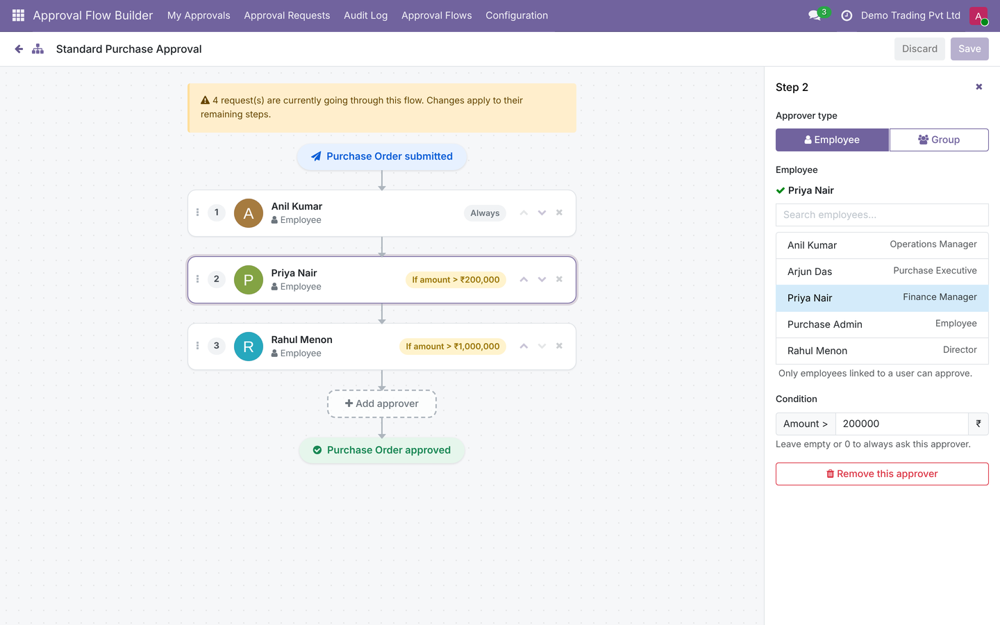
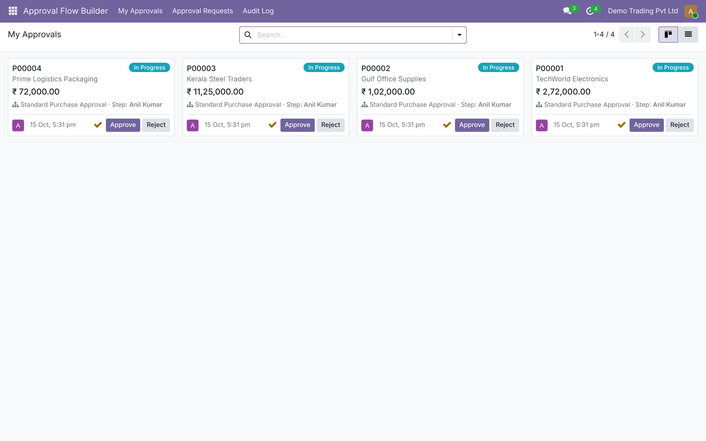
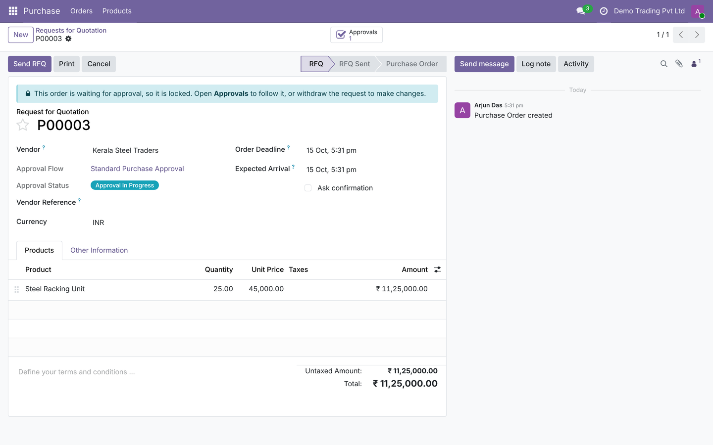
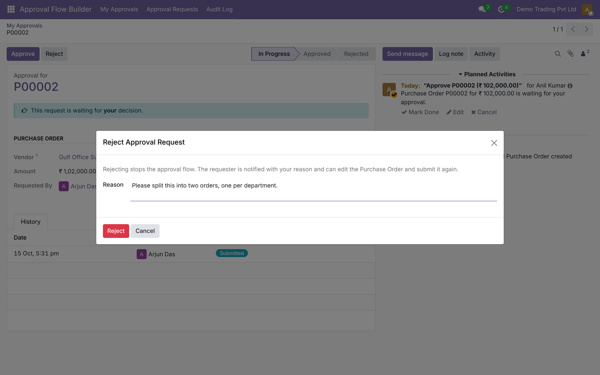
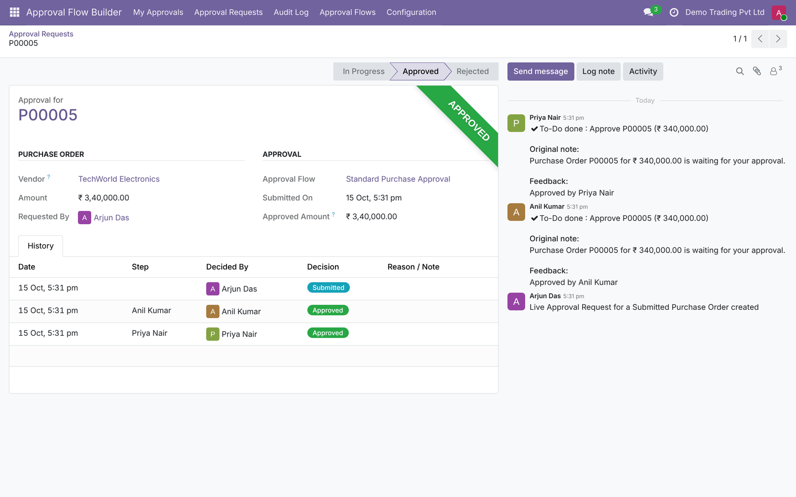
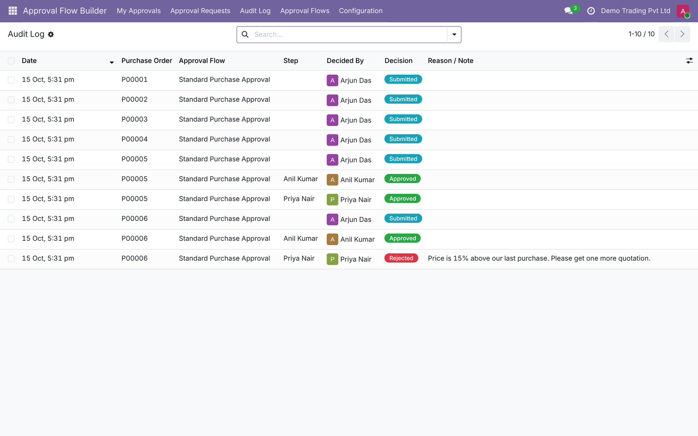
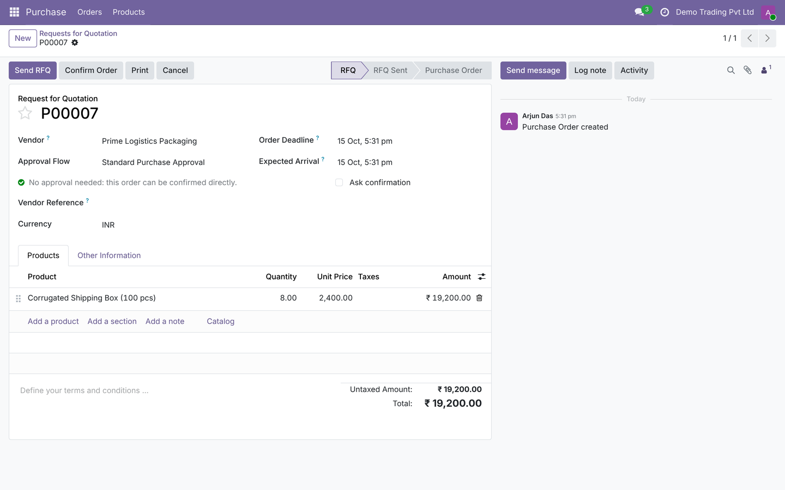
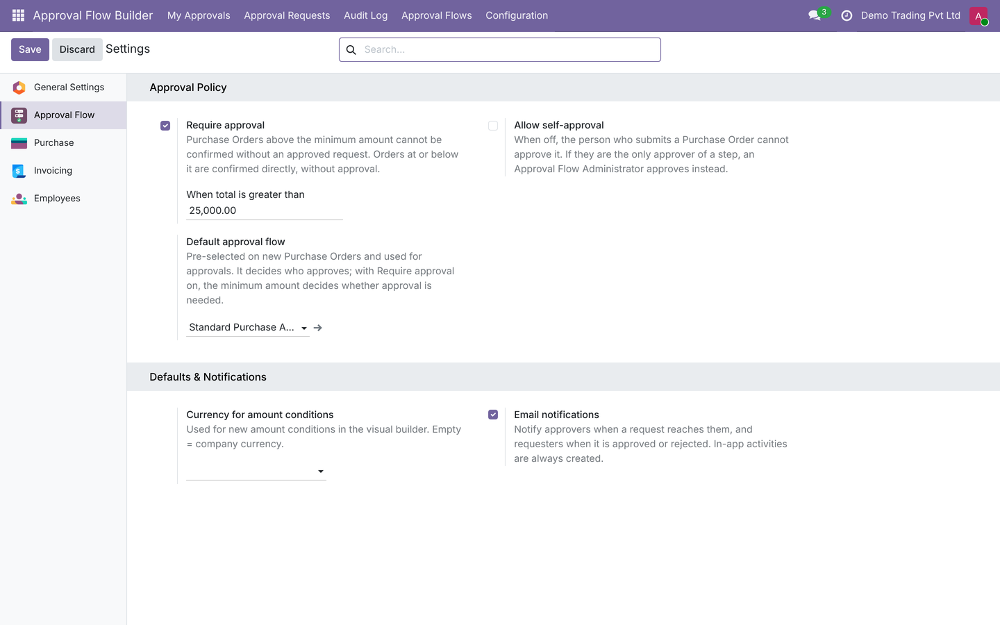

Odoo 19 Free & open source (LGPL-3) 23 automated tests
Add approvers, drag to reorder, and set amount rules — for example, Finance only above ₹2,00,000 and the Director only above ₹10,00,000. No forms full of rules: you see the chain exactly as it runs.

Visual builderDrag-and-drop approval chains. Approvers can be a specific employee or a user group (any member can approve). |
Amount rulesEach step can apply only above an amount. Orders below a configurable minimum are confirmed directly — no approval needed. |
No bypassingConfirm Order is blocked until approved. The order is locked while waiting, and a confirmed order cannot be increased above the approved amount. |
My ApprovalsApprovers get a to-do and an inbox notification, and approve or reject from a kanban board in one click. |
Reject with a reasonA reason is required. The requester is notified, edits the order and submits again — or withdraws the request. |
Audit logEvery Submitted, Approved, Rejected and Withdrawn event with user, step, time and reason. Entries cannot be edited. |
Self-approval controlOptionally prevent people from approving their own orders; the step goes to an Approval Flow Administrator instead. |
Secure by designTwo security groups and record rules: users only see requests they submitted, decided or must decide. |
Tested23 automated tests; Odoo's own Purchase test suite passes with the module installed. |
Each approver sees only what is waiting for them.

Lines, vendor and currency cannot change during approval, and Confirm Order stays hidden.




Below your minimum amount, the order shows "No approval needed" and can be confirmed directly.


Full user guide, source code and issue tracker: github.com/6oshan/approval_flow_builder
Open an issue on GitHub or write to roshanjosekurian@gmail.com.